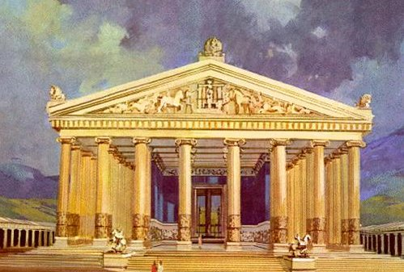

As 7 Maravilhas do Mundo Antigo
As 7 maravilhas do mundo antigo são edificações humanas construídas na Antiguidade em regiões próximo do Mar Mediterrâneo e que os gregos consideravam dignas de visitação. Os primeiros registros sobre as maravilhas do mundo são do século III a.C., e foram feitos por Filão de Bizâncio. Todas as maravilhas do mundo antigo estão localizadas em regiões próximo ao mar Mediterrâneo, na Grécia, Egito, atual Turquia e Iraque.
Quais São as 7 Maravilhas do Mundo Antigo?
- A Grande Pirâmide de Gizé
- Mausoléu de Halicarnasso
- Estátua de Zeus
- Jardins Suspensos da Babilônia
- Farol de Alexandria
- Templo de Ártemis
- Colosso de Rodes
-
A Grande Pirâmide de Gizé
A Grande Pirâmide de Gizé, também conhecida como Pirâmide de Quéops, foi construída durante o reinado do faraó Quéops (ou Khufu) da 4ª dinastia do Antigo Egito, por volta de 2580 a.C. É a maior das três pirâmides localizadas na necrópole de Gizé, perto do Cairo. A construção da pirâmide é um feito impressionante de engenharia e arquitetura da antiguidade. Originalmente, a pirâmide tinha cerca de 146 metros de altura, mas hoje mede aproximadamente 138 metros devido à perda do revestimento externo.
Acredita-se que a construção da Grande Pirâmide tenha envolvido milhares de trabalhadores e uma complexa logística de transporte e montagem de pedras. Ela foi a estrutura mais alta do mundo por cerca de 3.800 anos. A Grande Pirâmide é a única das Sete Maravilhas do Mundo Antigo que ainda existe, mantendo-se como um símbolo duradouro da habilidade e da ambição dos antigos egípcios.

-
Mausoléu de Halicarnasso
O Mausoléu de Halicarnasso foi um túmulo monumental construído no século IV a.C. para Mausolo, um sátrapa persa, e sua esposa, Artemísia II. Iniciado em 353 a.C., o mausoléu foi concluído em 344 a.C. e era famoso por sua altura de cerca de 45 metros e por suas esculturas elaboradas, projetadas por artistas renomados. Considerado uma das Sete Maravilhas do Mundo Antigo, o mausoléu foi destruído por terremotos na Idade Média, e seus restos foram usados em outras construções. Hoje, é uma importante área arqueológica.
-
Estátua de Zeus
A Estátua de Zeus em Olímpia, esculpida por Fídias entre 435 e 430 a.C., foi uma das Sete Maravilhas do Mundo Antigo. Feita de marfim e ouro, com cerca de 12 metros de altura, representava Zeus sentado em um trono imponente no Templo de Zeus, na Grécia. Sua criação foi um marco artístico e técnico, simbolizando o poder e a magnificência da deidade. No entanto, a estátua foi destruída por um incêndio ou saque no século V d.C., e apenas descrições e representações artísticas permanecem como testemunhas de sua grandiosidade.
-
Jardins Suspensos da Babilônia
Os Jardins Suspensos da Babilônia, uma das Sete Maravilhas do Mundo Antigo, teriam sido construídos no século VI a.C. por Nabucodonosor II para sua esposa Amytis, replicando a vegetação de sua terra natal. Descritos como terraços elevados com plantas exuberantes e irrigados por um complexo sistema de canais, sua existência real ainda é incerta, já que nenhuma evidência arqueológica os confirmou. A lenda dos jardins continua a fascinar como símbolo da engenhosidade e grandiosidade das civilizações antigas.
-
Farol de Alexandria
O Farol de Alexandria, construído na ilha de Pharos por volta de 280 a.C., foi uma das Sete Maravilhas do Mundo Antigo e serviu como guia para os marinheiros que chegavam ao movimentado porto de Alexandria, no Egito. Com cerca de 100 a 130 metros de altura, ele utilizava fogo e espelhos de bronze para projetar sua luz e se tornou um símbolo de poder e conhecimento da civilização helenística.
Apesar de sua grandiosidade, o farol foi danificado por vários terremotos entre os séculos III e XIV d.C., e suas ruínas acabaram submersas no Mediterrâneo. Descobertas arqueológicas em 1994 revelaram parte de sua estrutura submersa, perpetuando o legado do farol como precursor dos faróis modernos e ícone da antiga Alexandria.
-
Templo de Ártemis
O Templo de Ártemis, localizado em Éfeso, na atual Turquia, foi uma das Sete Maravilhas do Mundo Antigo. Construído por volta de 550 a.C., o templo era dedicado à deusa grega Ártemis e se destacava por suas impressionantes dimensões, com colunas de mármore de 18 metros de altura e rica decoração com esculturas mitológicas.
O templo foi destruído e reconstruído várias vezes ao longo dos séculos, sendo incendiado em 356 a.C. e desmantelado definitivamente em 401 d.C. Hoje, restam apenas fragmentos no local, mas o Templo de Ártemis é lembrado como um símbolo da grandeza arquitetônica e cultural da antiga cidade de Éfeso.
 -
Colosso de Rodes
O Colosso de Rodes, uma das Sete Maravilhas do Mundo Antigo, foi uma estátua de bronze de 33 metros erguida na ilha de Rodes por volta de 280 a.C., representando o deus Hélios. Construído para celebrar a vitória sobre o cerco de Demétrio Poliórcetes, o monumento foi projetado por Chares de Lindos e tornou-se uma das maiores estátuas do mundo antigo.
Em 226 a.C., um terremoto destruiu o Colosso, que permaneceu em ruínas por mais de 800 anos até< ser vendido como sucata. Apesar de sua curta existência, a estátua continuou a inspirar admiração e simboliza a engenhosidade e resistência da civilização helenística.